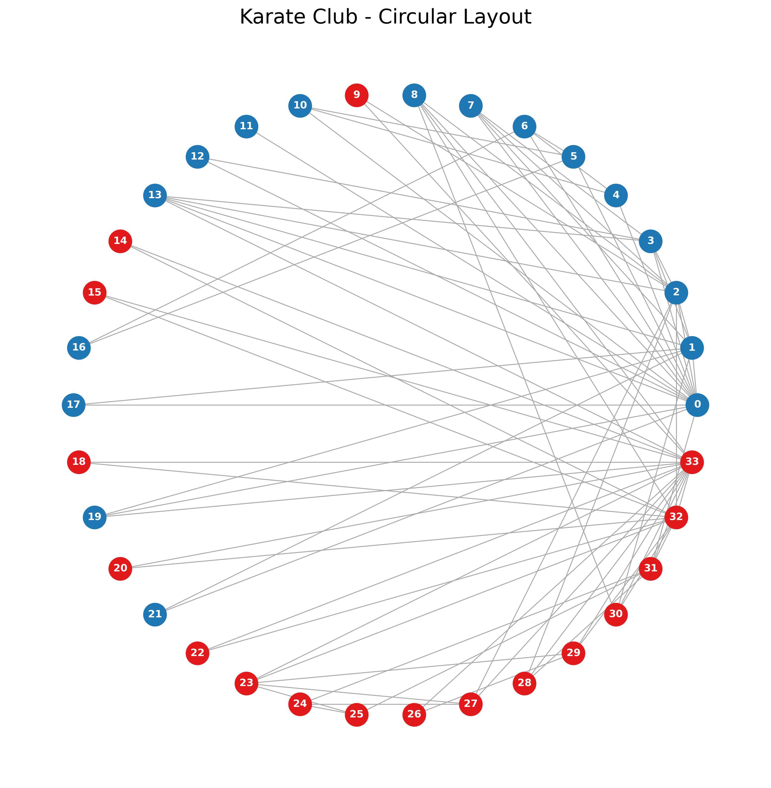

Insight: The circular layout evenly distributes all 34 members of the karate club along a single large ring. The nodes are colored based on their ultimate club allegiance after the split (blue for Mr. Hi, red for the Officer). This layout avoids node overlap entirely and makes it easy to trace individual edge connections, showing that inter-faction friendships (edges crossing the center) were surprisingly common.